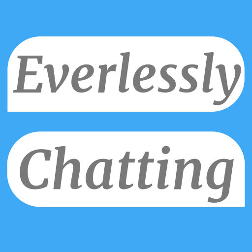

Welcome to Everlessly Chatting
What are we about
Everlessly chatting is a free online messenger that updates in realtime. We like to pride ourselves on ease of use by providing one click login and management of your account, by simply loging in with your Google/Facebook/Github account you create an account with us. If those accounts have the same email they'll automatically link up without you having to do a thing
News

We are very close to our first stable release, the account system is complete and chat rooms are on the list. The UI/Design is all but done and I am confident that the whole project will be fully stable by Christmas 2014. To create an account simply login with your Google, Facebook or Github account. An account will be automatically created. If you login with a different account that uses the same email as the first one they will link, e.g. I login with my google account, my email is test@test.com, then I login with my facebook account which has the same email (test@test.com), those accounts are now linked and the same messages and chat rooms can be accessed from both the accounts.